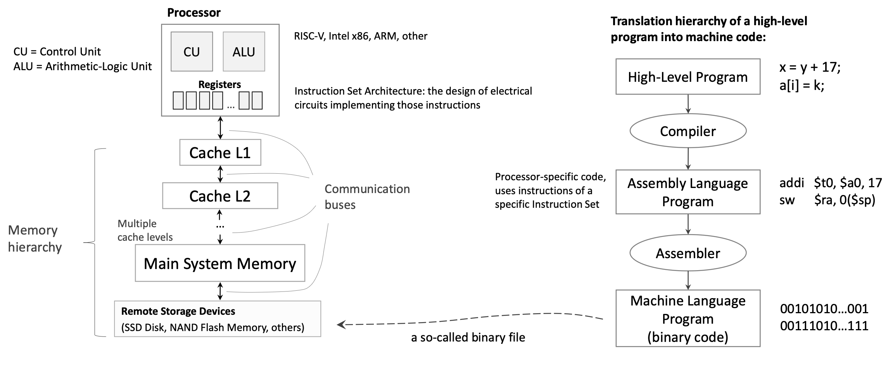
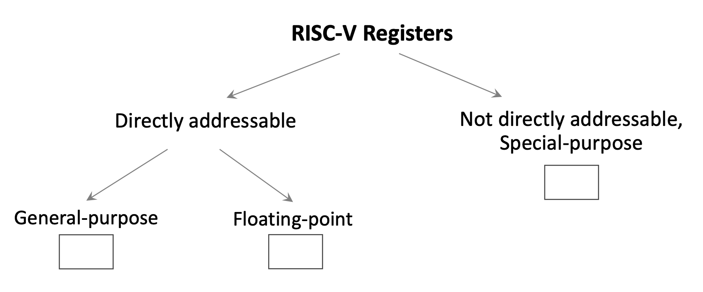
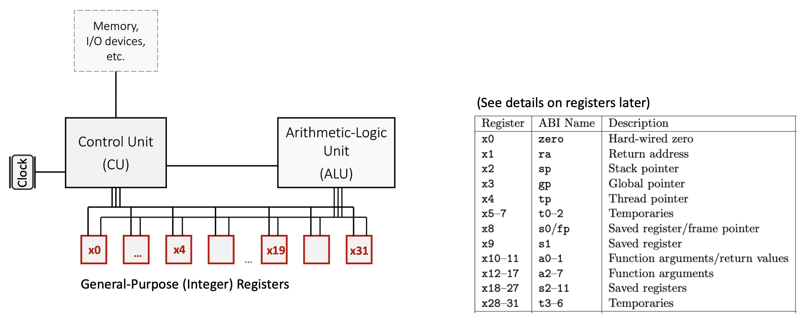
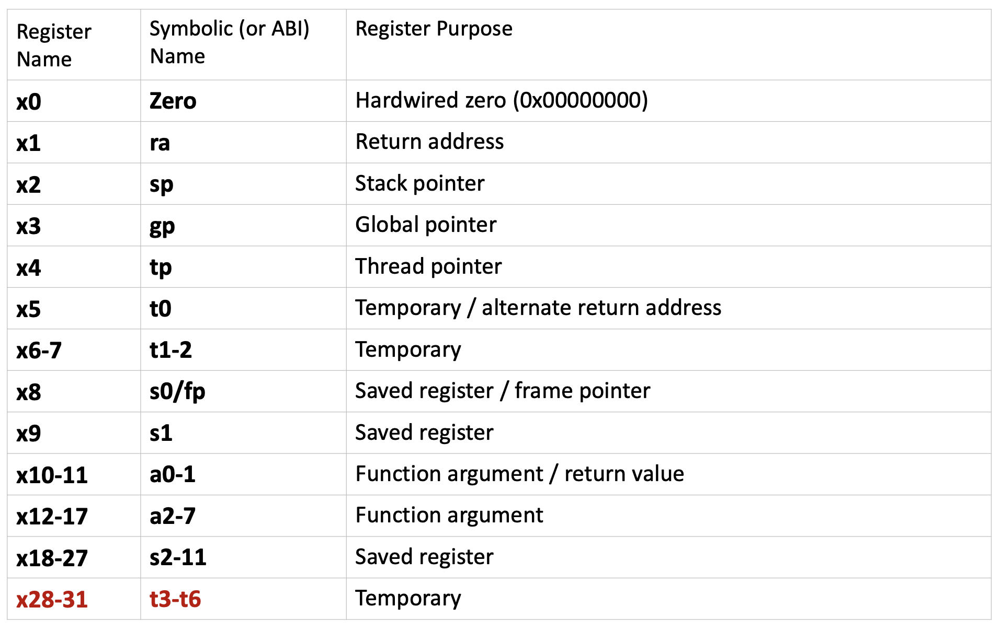
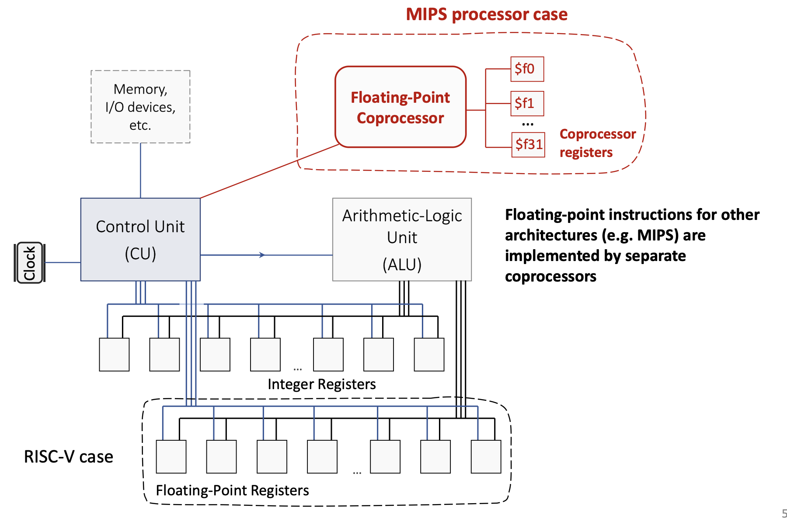
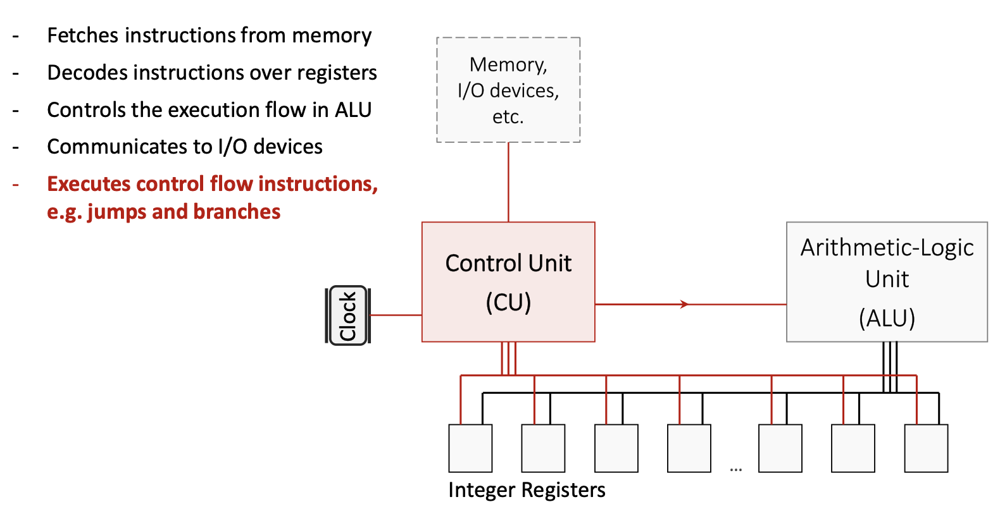
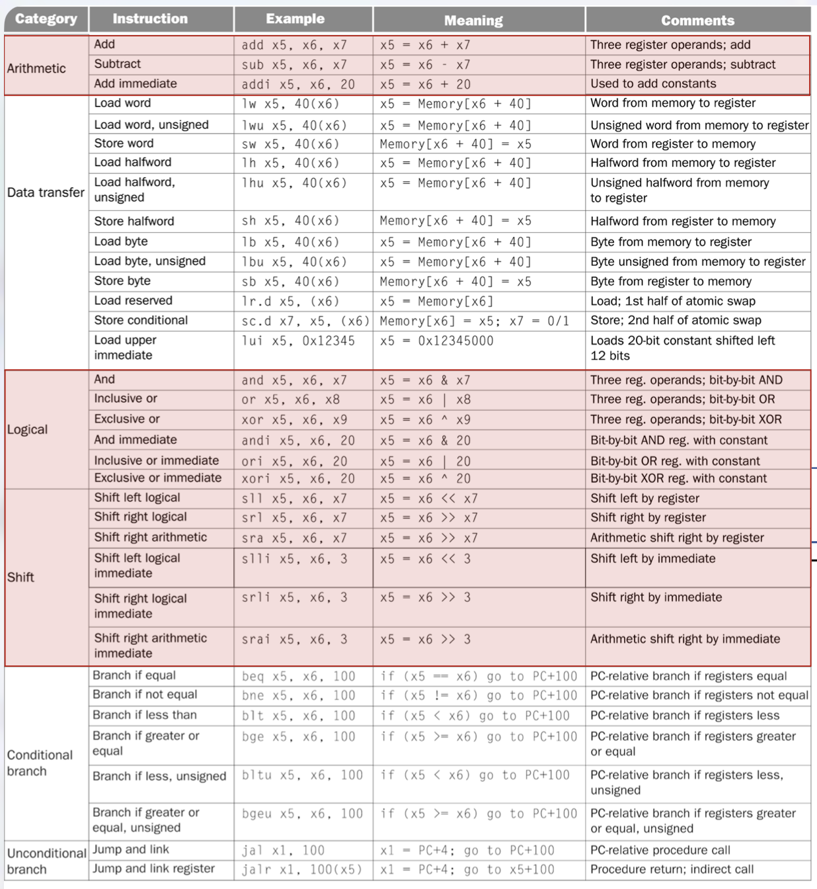
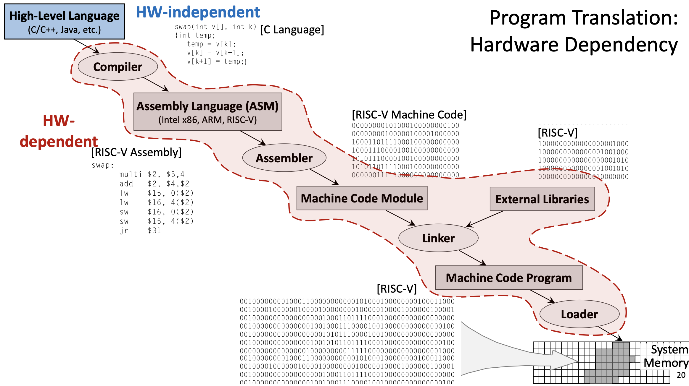
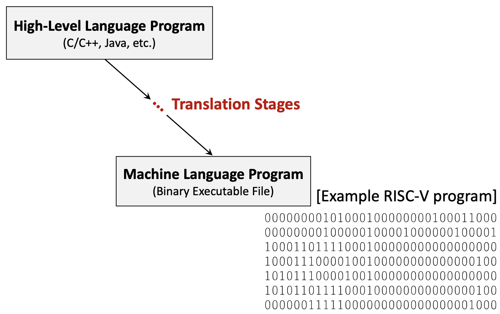
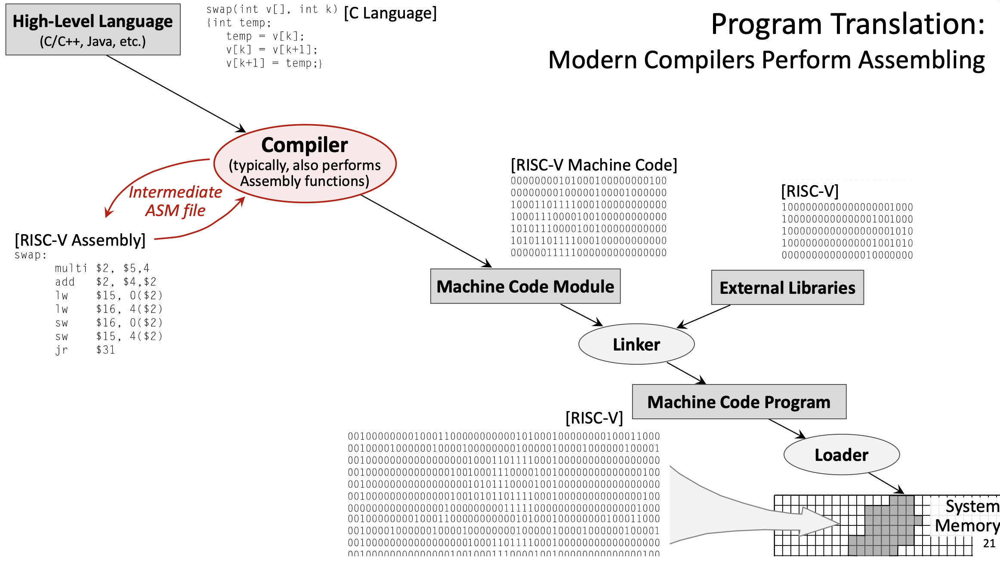

W11. RISC-V Assembly Basics
1. Theory
1.1 Introduction to RISC-V
RISC-V (Reduced Instruction Set Computer, 5th Generation) is a modern instruction set architecture (ISA) designed with simplicity and efficiency in mind. Unlike traditional architectures that may have hundreds of complex instructions, RISC-V follows the RISC philosophy: use a small set of simple instructions that execute quickly. This design principle helps minimize the propagation delay (the time it takes for a signal to travel through a circuit), which directly affects the CPU’s clock frequency and overall performance.
The RISC-V architecture is a load/store architecture, meaning that all computational instructions (like addition, subtraction, logical operations) operate exclusively on registers—special high-speed storage locations directly connected to the processor’s computational units. Only dedicated load and store instructions can transfer data between registers and memory. This design choice simplifies the instruction set and allows for faster execution.

1.2 RISC-V Registers

1.2.1 General-Purpose Integer Registers
RISC-V provides 32 directly addressable integer registers, named x0 through x31. Each register is 64 bits wide by default (in RV64, the 64-bit variant of RISC-V). These registers are general-purpose, but by convention, they are reserved for specific purposes to maintain consistency across programs and facilitate function calls. Each register has both a numerical name (like x5) and an ABI (Application Binary Interface) name (like t0) that describes its conventional use.

Key register categories:
x0(zero): A special register hardwired to the constant value 0. Writing to this register has no effect, and reading from it always returns 0. This is useful for operations like copying values (by adding zero) or implementing NOP (no operation) instructions.- Temporary registers (
t0-t6): Registersx5-x7andx28-x31are used for temporary values that don’t need to be preserved across function calls. The caller doesn’t expect these values to remain unchanged after calling a function. - Saved registers (
s0-s11): Registersx8-x9andx18-x27must be preserved across function calls. If a function uses these registers, it must save their original values and restore them before returning. - Argument/return registers (
a0-a7): Registersx10-x17pass arguments to functions and return results.a0anda1specifically hold return values. - Special-purpose registers:
x1(ra): Return address register, stores the address to return to after a function callx2(sp): Stack pointer, points to the top of the current stack framex3(gp): Global pointer, provides access to global/static variablesx4(tp): Thread pointer, used in multi-threaded programsx8(s0/fp): Can also serve as a frame pointer to reference local variables

1.2.2 Special-Purpose Registers
The Program Counter (PC) is a special register that is part of the Control Unit (CU) but not directly addressable by most instructions. It stores the memory address of the instruction currently being executed. After fetching each instruction, the PC automatically increments to point to the next instruction.
1.2.3 Floating-Point Registers
RISC-V also includes 32 floating-point registers (f0-f31) for operations on floating-point numbers. Unlike some older architectures (like MIPS, which used a separate floating-point coprocessor), RISC-V integrates floating-point support directly into the main processor.

1.2.4 Register Spilling
Since there are only 32 integer registers, complex programs with many live variables may run out of registers. When this happens, the compiler performs register spilling: it temporarily stores some register values in memory (typically on the stack) to free up registers, then reloads them when needed. This is a trade-off between the cost of having more registers (which would increase hardware complexity and propagation delay) and the occasional performance penalty of memory access.
1.3 RISC-V Architecture Components
1.3.1 Control Unit (CU)
The Control Unit orchestrates all CPU operations:

1.3.2 Arithmetic Logic Unit (ALU)
The ALU performs all arithmetic and logical computations:
- Executes operations like addition, subtraction, AND, OR, XOR, and bit shifts
- Is specifically designed for minimized propagation delay to allow higher clock frequencies
- Receives operands from registers, performs the operation, and writes the result back to a register
1.3.3 Communication Buses
On-chip communication buses connect the CU, ALU, registers, and memory hierarchy. These buses carry:
- Instruction data from memory to the CU
- Operand values between registers and the ALU
- Control signals that coordinate operations across components
1.4 RISC-V Instruction Categories

RISC-V instructions are organized into several categories based on their function:
1.4.1 Arithmetic Instructions
These instructions perform mathematical operations on register values:
add rd, rs1, rs2: Adds the values in registersrs1andrs2, stores the result in registerrd. Example:add x5, x6, x7computesx5 = x6 + x7.sub rd, rs1, rs2: Subtractsrs2fromrs1, stores the result inrd. Example:sub x5, x6, x7computesx5 = x6 - x7.addi rd, rs1, imm: Adds an immediate (constant) value tors1, stores the result inrd. Example:addi x5, x6, 20computesx5 = x6 + 20. This instruction is crucial for loading constants and adjusting addresses.
1.4.2 Logical Instructions
These perform bitwise operations (operating on each bit independently):
and rd, rs1, rs2: Bitwise AND. Example:and x5, x6, x7computesx5 = x6 & x7.or rd, rs1, rs2: Bitwise OR. Example:or x5, x6, x8computesx5 = x6 | x8.xor rd, rs1, rs2: Bitwise XOR (exclusive OR). Example:xor x5, x6, x9computesx5 = x6 ^ x9.- Immediate versions:
andi,ori,xoriperform these operations with a constant value.
1.4.3 Shift Instructions
Shift instructions move bits left or right:
sll rd, rs1, rs2: Shift left logical by the amount inrs2. Example:sll x5, x6, x7computesx5 = x6 << x7. This multiplies by powers of 2.srl rd, rs1, rs2: Shift right logical by the amount inrs2. Fills with zeros from the left. Used for unsigned division by powers of 2.sra rd, rs1, rs2: Shift right arithmetic by the amount inrs2. Preserves the sign bit for signed numbers.- Immediate versions:
slli,srli,sraiuse a constant shift amount (e.g.,slli x5, x6, 3computesx5 = x6 << 3).
1.4.4 Data Transfer Instructions
These instructions move data between registers and memory:
- Load instructions read from memory into a register:
lw rd, offset(rs1): Load word (32 bits). Example:lw x5, 40(x6)loads the word at addressx6 + 40intox5.lh rd, offset(rs1): Load halfword (16 bits), sign-extended to 64 bits.lb rd, offset(rs1): Load byte (8 bits), sign-extended to 64 bits.- Unsigned versions (
lwu,lhu,lbu) zero-extend instead of sign-extend.
- Store instructions write from a register to memory:
sw rs2, offset(rs1): Store word. Example:sw x5, 40(x6)stores the word inx5to addressx6 + 40.sh rs2, offset(rs1): Store halfword.sb rs2, offset(rs1): Store byte.
lui rd, imm: Load upper immediate. Loads a 20-bit constant into the upper 20 bits ofrd, setting the lower 12 bits to zero. Example:lui x5, 0x12345setsx5 = 0x12345000. This is used in combination with other instructions to load large constants.- Atomic instructions (
lr.d,sc.d): Load reserved and store conditional, used for synchronization in multi-threaded programs.
1.4.5 Conditional Branch Instructions
Branch instructions implement conditional execution (like if statements):
beq rs1, rs2, offset: Branch if equal. Ifrs1 == rs2, jump toPC + offset. Example:beq x5, x6, 100jumps 100 bytes forward ifx5equalsx6.bne rs1, rs2, offset: Branch if not equal.blt rs1, rs2, offset: Branch if less than (signed comparison).bge rs1, rs2, offset: Branch if greater or equal (signed).bltu rs1, rs2, offset: Branch if less than (unsigned).bgeu rs1, rs2, offset: Branch if greater or equal (unsigned).
All branch offsets are PC-relative: they specify a displacement from the current PC value.
1.4.6 Unconditional Jump Instructions
Jump instructions implement function calls and returns:
jal rd, offset: Jump and link. Stores the return address (PC + 4) inrd, then jumps toPC + offset. Example:jal x1, 100saves the next instruction’s address inx1and jumps forward 100 bytes. This is used for function calls.jalr rd, offset(rs1): Jump and link register. StoresPC + 4inrd, then jumps tors1 + offset. Example:jalr x1, 100(x5)saves the return address inx1and jumps tox5 + 100. This enables indirect calls and function returns (by settingrd = x0to discard the return address).
1.5 Pseudo-Instructions
Pseudo-instructions are convenient mnemonics that the assembler translates into one or more real RISC-V instructions. They simplify assembly programming:
li rd, imm: Load immediate. Example:li t1, 5becomesaddi t1, zero, 5(add 5 to the zero register).mv rd, rs: Move. Example:mv a0, t0becomesadd a0, zero, t0(add zero tot0).nop: No operation, becomesaddi zero, zero, 0.la rd, symbol: Load address of a symbol (label) intord.j offset: Jump, becomesjal x0, offset(jump without saving return address).ret: Return from function, becomesjalr x0, 0(ra)(jump to address inra).
1.6 System Calls
System calls (syscalls) provide a mechanism for programs to request services from the operating system, such as I/O operations. In RISC-V assembly using the RARS simulator, syscalls are invoked using the ecall instruction. The specific service is determined by a code placed in register a7, and arguments are passed in registers a0, a1, etc.
Common syscall codes:
- Code 1 (Print integer): Prints the integer value in
a0to the console. - Code 2 (Print float): Prints the float value in
fa0to the console. - Code 3 (Print double): Prints the double value in
fa0to the console. - Code 4 (Print string): Prints the null-terminated string whose address is in
a0. - Code 5 (Read integer): Reads an integer from the console and stores it in
a0. - Code 8 (Read string): Reads a string into the buffer at address
a0, with maximum length ina1. - Code 10 (Exit): Terminates the program.
Typical usage pattern:
li a7, 1 # Set syscall code to 1 (print integer)
li a0, 42 # Load value to print
ecall # Execute syscall1.7 Assembly Program Structure
RISC-V assembly programs are divided into segments:
1.7.1 Data Segment
The .data directive marks the beginning of the data segment, which contains static variables and constants:
.data
msg: .asciz "Hello, World!" # Null-terminated string
number: .word 42 # 32-bit integer
buffer: .space 100 # Reserve 100 bytes.asciz: Declares a null-terminated string..word: Declares a 32-bit integer..space n: Reservesnbytes of uninitialized space.
1.7.2 Text Segment
The .text directive marks the beginning of the code segment, which contains executable instructions:
.text
main:
# Your code hereLabels (like main:) mark specific locations in code and can be used as jump targets.
1.8 Writing RISC-V Assembly Programs
To write an effective assembly program:
- Understand the algorithm: Break down the high-level logic into simple steps.
- Allocate registers: Decide which registers will hold which values. Use temporary registers (
t0-t6) for intermediate computations and saved registers (s0-s11) for values that must persist. - Load constants: Use
lito load immediate values into registers. - Perform computations: Use arithmetic and logical instructions.
- Handle I/O: Use syscalls to read input and print output.
- Exit cleanly: Always end with an exit syscall (
li a7, 10; ecall).
1.9 Program Translation Process

Before a program can run on a processor, it must be translated from high-level source code to machine code. This process involves several stages:
1.9.1 High-Level Language
Programs are typically written in high-level languages like C, C++, or Java. These languages are hardware-independent: the same source code can theoretically run on any processor architecture. High-level languages provide abstractions like variables, functions, loops, and objects that make programming more intuitive.

Example C function:
void swap(int v[], int k) {
int temp;
temp = v[k];
v[k] = v[k+1];
v[k+1] = temp;
}1.9.2 Compilation
The compiler translates high-level code into assembly language for a specific target architecture (like RISC-V, x86, or ARM). This stage is complex and involves:
- Parsing: Analyzing the source code’s syntax and semantics.
- Optimization: Applying transformations to improve performance (e.g., eliminating redundant calculations, reordering instructions, unrolling loops).
- Code generation: Producing assembly instructions that implement the high-level logic.
- Register allocation: Deciding which variables should be stored in which registers.
The compiler is configurable: you can specify optimization levels (like -O0 for no optimization, -O3 for aggressive optimization) and language standards.
Example output (simplified RISC-V assembly for the swap function):
swap:
slli t0, a1, 2 # t0 = k * 4 (multiply by word size)
add t0, a0, t0 # t0 = address of v[k]
lw t1, 0(t0) # t1 = v[k]
lw t2, 4(t0) # t2 = v[k+1]
sw t2, 0(t0) # v[k] = t2 (v[k+1])
sw t1, 4(t0) # v[k+1] = t1 (v[k])
jr ra # return1.9.3 Assembly
The assembler translates assembly language into machine code (binary). This is a relatively straightforward, mechanical process:
- Each assembly instruction maps to a specific binary encoding defined by the ISA.
- Labels are converted to addresses.
- Pseudo-instructions are expanded into real instructions.
The output is an object file (machine code module), which contains binary instructions but may have unresolved references to external functions or libraries.
Example: add x5, x6, x7 might be encoded as the 32-bit binary value 00000000011100110000001010110011.
1.9.4 Linking
The linker combines multiple object files and external libraries (like the C standard library) into a single executable program:
- Resolves references to external functions (e.g.,
printf,malloc). - Assigns final memory addresses to all code and data.
- Produces a complete executable binary file.
External libraries are typically specified in the source code using #include directives (in C/C++) or import statements (in other languages).
1.9.5 Loading
The loader is part of the operating system. When you run a program, the loader:
- Reads the executable file from disk.
- Allocates memory for the program’s code, data, and stack.
- Copies the program into system memory.
- Sets up the initial execution environment (e.g., initializes registers, sets the PC to the program’s entry point).
- Transfers control to the program.
1.10 Hardware Dependency
The translation process involves both hardware-independent and hardware-dependent stages:
- Hardware-independent: High-level source code (C, Java, etc.) can be written once and compiled for different architectures.
- Hardware-dependent: Assembly language, machine code, and the specific instruction set used are tied to a particular architecture (RISC-V, x86, ARM, etc.). You cannot run RISC-V machine code on an x86 processor without emulation.
Modern compilers often perform the assembler’s job as well, directly producing machine code from high-level source. The intermediate assembly file may be generated for debugging purposes but is not strictly necessary.

1.11 Instruction Set Architecture and Performance
The design of an ISA significantly impacts CPU performance:
1.11.1 Propagation Delay and Clock Frequency
The worst-case propagation delay of the slowest instruction determines the maximum clock frequency. If one instruction takes much longer to execute than others, the entire CPU must slow down to accommodate it.
1.11.2 Number of Registers
Having more registers would reduce the need for memory access, but it comes with trade-offs:
- More registers → more complex multiplexers and decoding logic → longer propagation delays → lower clock frequency.
- Fewer registers → simpler hardware → faster clock → but more frequent register spilling (memory access).
RISC-V’s 32 registers represent a balance: enough for most programs to keep frequently used values in registers, but not so many that the hardware becomes slow. The design objective is to optimize performance for the average use case, not just the best or worst case.
1.12 Memory Hierarchy
Modern computers use a memory hierarchy to balance speed and capacity:
- Registers: Fastest (nanoseconds), smallest capacity (32-64 registers).
- Cache L1: Very fast, small (tens of KB).
- Cache L2: Fast, medium (hundreds of KB to a few MB).
- Main system memory (RAM): Slower, large (GB).
- Remote storage devices (SSD, HDD): Much slower, very large (TB).
Instructions and data move up and down this hierarchy as needed. The CPU always tries to keep the most frequently accessed data in faster levels.
2. Definitions
- RISC-V: A reduced instruction set computer architecture (5th generation) that uses a small set of simple, fast-executing instructions to achieve high performance.
- Instruction Set Architecture (ISA): The set of instructions a processor can execute, defining the interface between software and hardware.
- Register: A fast storage location directly connected to the CPU’s computational units, used to hold operands and results.
- Load/Store Architecture: A design where computational instructions operate only on registers, and only dedicated load/store instructions access memory.
- ABI (Application Binary Interface) Name: The conventional name for a register indicating its intended purpose (e.g.,
t0for temporary,s0for saved). - Program Counter (PC): A special register that stores the memory address of the instruction currently being executed.
- Propagation Delay: The time required for a signal to travel through a circuit, determining the maximum clock frequency.
- Control Unit (CU): The CPU component that fetches, decodes, and coordinates instruction execution.
- Arithmetic Logic Unit (ALU): The CPU component that performs arithmetic and logical computations.
- Pseudo-Instruction: An assembly mnemonic that the assembler translates into one or more real instructions for convenience.
- System Call (Syscall): A mechanism for programs to request operating system services like I/O operations.
- Register Spilling: The process of temporarily storing register values in memory when there aren’t enough registers for all live variables.
- Compiler: A program that translates high-level source code into assembly or machine code for a specific architecture.
- Assembler: A program that translates assembly language into binary machine code.
- Linker: A program that combines object files and libraries into a single executable program.
- Loader: An operating system component that loads executable programs into memory and initiates execution.
- Object File: A file containing machine code with potentially unresolved external references, produced by the assembler.
- Hardware-Independent: Code or languages that can run on different processor architectures without modification (e.g., C source code).
- Hardware-Dependent: Code or representations tied to a specific processor architecture (e.g., RISC-V assembly, x86 machine code).
- Immediate Value: A constant value encoded directly in an instruction (e.g., the
20inaddi x5, x6, 20). - PC-Relative: An addressing mode where addresses are specified as offsets from the current Program Counter value.
- Sign Extension: Filling the upper bits of a value with copies of the sign bit to preserve the numeric value when converting to a larger size.
- Zero Extension: Filling the upper bits of a value with zeros when converting to a larger size.
- Word: A 32-bit (4-byte) data unit, the standard size for RISC-V instructions.
- Halfword: A 16-bit (2-byte) data unit.
- Byte: An 8-bit data unit.
3. Practice
3.1. Simple Addition Program (Lab 9, Task 1)
Write a RISC-V assembly program that computes
Click to see the solution
Key Concept: Load constants into registers, perform arithmetic, use syscalls for output, and properly exit.
Here’s the program using pseudo-instructions:
li t1, 5 # load value "5" into register t1
li t2, 7 # load value "7" into register t2
add t0, t1, t2 # t0 = t1 + t2
mv a0, t0 # move value from register t0 to a0
li a7, 1 # set code for syscall to "1" (to print)
ecall # execute syscall with code in a7 and argument in a0
li a7, 10 # set code for syscall to "10" (exit)
ecall # execute syscall with code "10"Here’s the same program with pseudo-instructions expanded to real RISC-V instructions:
addi t1, zero, 5 # load value "5" into register t1 (li t1, 5)
addi t2, zero, 7 # load value "7" into register t2 (li t2, 7)
add t0, t1, t2 # t0 = t1 + t2
add a0, zero, t0 # move value from register t0 to a0 (mv a0, t0)
addi a7, zero, 1 # set code for syscall to "1" (li a7, 1)
ecall # execute syscall with code in a7 and argument in a0
addi a7, zero, 10 # set code for syscall to "10" (li a7, 10)
ecall # execute syscall with code "10"Explanation:
- Load constants:
li(load immediate) is a pseudo-instruction that becomesaddi rd, zero, imm. We load 5 intot1and 7 intot2. - Perform addition:
add t0, t1, t2adds the values and stores the result (12) int0. - Prepare for printing: We need the value in
a0for the print syscall, somv a0, t0copies it (this becomesadd a0, zero, t0). - Print the result: Set
a7 = 1(syscall code for print integer), thenecallexecutes the syscall, which prints the value ina0. - Exit: Set
a7 = 10(syscall code for exit), thenecallterminates the program.
Answer: The program prints 12 and exits.
3.2. Reading and Printing a String (Lab 9, Task 2)
Write a RISC-V assembly program that prompts the user to enter a string, reads the string, and then prints it back.
Click to see the solution
Key Concept: Use the data segment for static strings and buffers. Use syscalls 4 (print string) and 8 (read string).
.data # Start of segment with static variables
msg: .asciz "Enter your string: " # Prompt string
inputStr: .space 10 # Space for input string (10 bytes)
.text # Start of segment with code
main: # Start of the main function
li a7, 4 # Set code for syscall to PrintString
la a0, msg # Load address of msg to a0
ecall # Print the prompt
li a7, 8 # Set code for syscall to ReadString
la a0, inputStr # Load address of inputStr to a0
li a1, 10 # Set maximum read size to 10
ecall # Read the string
li a7, 4 # Set code for syscall to PrintString
la a0, inputStr # Load address of inputStr to a0
ecall # Print the input string
li a7, 10 # Set code for syscall to exit
ecall # Exit programExplanation:
- Data segment:
msgis a label for the null-terminated prompt string.inputStrreserves 10 bytes for the user’s input.
- Print prompt:
- Set
a7 = 4(print string syscall). - Use
la(load address) to put the address ofmsgina0. ecallprints the string.
- Set
- Read input:
- Set
a7 = 8(read string syscall). - Put the address of
inputStrina0(where to store the input). - Put the maximum length (10) in
a1. ecallreads the string from the console.
- Set
- Print the input:
- Set
a7 = 4again to print. - Put the address of
inputStrina0. ecallprints what the user entered.
- Set
- Exit: Standard exit sequence.
Answer: The program prompts for input, reads up to 10 characters, and echoes them back.
3.3. Sum of Three Integers (Lab 9, Assignment 2)
Write a RISC-V assembly program that reads three integer inputs from the user, computes their sum, and displays the result.
Click to see the solution
Key Concept: Use syscall 5 (read integer) three times, add the values, then use syscall 1 (print integer) to display the result.
.text
main:
# Read first integer
li a7, 5 # Syscall code for ReadInteger
ecall # Read integer, result stored in a0
mv t0, a0 # Save first integer in t0
# Read second integer
li a7, 5 # Syscall code for ReadInteger
ecall # Read integer, result stored in a0
mv t1, a0 # Save second integer in t1
# Read third integer
li a7, 5 # Syscall code for ReadInteger
ecall # Read integer, result stored in a0
mv t2, a0 # Save third integer in t2
# Compute sum
add t3, t0, t1 # t3 = t0 + t1 (sum of first two)
add t3, t3, t2 # t3 = t3 + t2 (add third number)
# Print result
mv a0, t3 # Move sum to a0 for printing
li a7, 1 # Syscall code for PrintInteger
ecall # Print the sum
# Exit
li a7, 10 # Syscall code for Exit
ecall # Exit programExplanation:
- Read first integer:
- Set
a7 = 5(read integer syscall). ecallreads an integer and stores it ina0.- Save it in
t0usingmv t0, a0.
- Set
- Read second integer:
- Same process, save in
t1.
- Same process, save in
- Read third integer:
- Same process, save in
t2.
- Same process, save in
- Compute sum:
add t3, t0, t1computes the sum of the first two numbers.add t3, t3, t2adds the third number to get the final sum.
- Print result:
- Move the sum to
a0(required for print syscall). - Set
a7 = 1(print integer). ecallprints the result.
- Move the sum to
- Exit: Standard exit sequence.
Answer: The program reads three integers, computes their sum, prints it, and exits. For example, if the user enters 5, 10, and 15, the program prints 30.
3.4. Swap Function Translation (Lecture 9, Example 1)
Given the following C function, show the complete translation process from high-level code to machine code:
void swap(int v[], int k) {
int temp;
temp = v[k];
v[k] = v[k+1];
v[k+1] = temp;
}Click to see the solution
Key Concept: Understand the multi-stage translation from high-level language through assembly to binary machine code.
Stage 1: High-Level Language (C)
The C function swaps two adjacent elements in an integer array. It:
- Takes an array
vand indexkas parameters - Uses a temporary variable to perform the swap
- Accesses array elements using bracket notation
Stage 2: Compilation to Assembly
The compiler translates this into RISC-V assembly. Assuming:
a0contains the base address of arrayva1contains the value ofk
swap:
slli t0, a1, 2 # t0 = k * 4 (multiply by word size)
add t0, a0, t0 # t0 = address of v[k]
lw t1, 0(t0) # t1 = v[k] (load first element)
lw t2, 4(t0) # t2 = v[k+1] (load second element)
sw t2, 0(t0) # v[k] = t2 (store second into first position)
sw t1, 4(t0) # v[k+1] = t1 (store first into second position)
jr ra # return (jump to return address)Explanation of assembly code: 1. Calculate address: Since each integer is 4 bytes (1 word), v[k] is at address base + k*4. The slli (shift left logical immediate) multiplies k by 4 efficiently. 2. Add base address: add t0, a0, t0 computes the absolute address of v[k]. 3. Load values: Load v[k] and v[k+1] into temporary registers. 4. Store swapped values: Write them back in reversed order. 5. Return: Jump to the address in ra (return address register).
Stage 3: Assembly to Machine Code
The assembler converts each instruction to a 32-bit binary encoding. Example encodings (simplified):
slli t0, a1, 2 → 00000000001001011001001010010011
add t0, a0, t0 → 00000000010101010000001010110011
lw t1, 0(t0) → 00000000000000101010001100000011
lw t2, 4(t0) → 00000000010000101010001110000011
sw t2, 0(t0) → 00000000011100101010000000100011
sw t1, 4(t0) → 00000000011000101010001000100011
jr ra → 00000000000000001000000001100111This produces a machine code module (object file).
Stage 4: Linking
The linker:
- Combines this object file with others and external libraries
- Resolves any external function references
- Assigns final memory addresses
- Produces the complete executable binary
Stage 5: Loading
The operating system’s loader:
- Allocates memory for the program
- Copies the machine code into RAM
- Sets up the initial environment (stack, registers, PC)
- Transfers control to the program’s entry point
Answer: The translation process converts the C function through compilation (to assembly), assembly (to binary object code), linking (to executable), and loading (into memory for execution). Each stage is necessary to transform human-readable code into instructions the processor can execute.
3.5. Using Load Upper Immediate (Lecture 9, Example 2)
Load the 32-bit value 0x12345678 into register t0.
Click to see the solution
Key Concept: RISC-V instructions are 32 bits, so immediate values are limited in size. To load large constants, we use lui (load upper immediate) combined with addi or ori.
Method:
- Load upper 20 bits:
luiloads a 20-bit immediate into the upper 20 bits of a register and zeros the lower 12 bits. - Set lower 12 bits: Use
addiororito set the lower bits.
lui t0, 0x12345 # Load 0x12345 into upper 20 bits: t0 = 0x12345000
ori t0, t0, 0x678 # OR with 0x678: t0 = 0x12345000 | 0x678 = 0x12345678Explanation:
lui t0, 0x12345:- Takes the 20-bit value
0x12345and places it in bits [31:12] oft0. - Sets bits [11:0] to zero.
- Result:
t0 = 0x12345000
- Takes the 20-bit value
ori t0, t0, 0x678:- Performs bitwise OR with the 12-bit value
0x678. - Since the upper bits of
0x678are zero, this effectively sets the lower 12 bits. - Result:
t0 = 0x12345678
- Performs bitwise OR with the 12-bit value
Alternative using addi:
lui t0, 0x12345 # t0 = 0x12345000
addi t0, t0, 0x678 # t0 = t0 + 0x678 = 0x12345678This works when the lower 12 bits don’t require sign extension considerations. For negative values or when bit 11 is set, you may need to adjust the lui value.
Answer: Use lui to load the upper 20 bits, then ori or addi to set the lower 12 bits.
3.6. Array Access with Load Instruction (Lecture 9, Example 3)
Given an integer array A with base address stored in register s0, and index i stored in register s1, write instructions to load A[i] into register t0.
Click to see the solution
Key Concept: Array elements are stored contiguously in memory. For an integer array, each element is 4 bytes (1 word). To access A[i], compute address = base + i * 4.
Solution:
slli t1, s1, 2 # t1 = i * 4 (shift left by 2 is multiply by 4)
add t1, s0, t1 # t1 = base_address + offset = address of A[i]
lw t0, 0(t1) # t0 = Memory[t1] = A[i]Explanation:
- Calculate offset:
slli t1, s1, 2shiftsileft by 2 bits, effectively multiplying byi. - Calculate address:
add t1, s0, t1adds the base address to the offset, giving the absolute address ofA[i]. - Load value:
lw t0, 0(t1)loads the word at addresst1 + 0intot0.
Optimized alternative (if the offset is small):
If you can compute the address in one step:
slli t1, s1, 2 # t1 = i * 4
add t1, s0, t1 # t1 = address of A[i]
lw t0, 0(t1) # t0 = A[i]Or, if using a combined approach:
slli t1, s1, 2 # t1 = i * 4
lw t0, 0(s0 + t1) # ERROR: This syntax isn't valid!Note: RISC-V doesn’t support register+register addressing in load/store instructions directly. You must compute the address first.
Answer: Shift the index left by 2 to multiply by 4, add to the base address, then use lw to load the value.
3.7. Conditional Branch Example (Lecture 9, Example 4)
Implement the following C code in RISC-V assembly:
if (x == y) {
z = x + y;
} else {
z = x - y;
}Assume x is in register s0, y is in register s1, and z should be stored in register s2.
Click to see the solution
Key Concept: Use conditional branch instructions to implement if-else logic. Branch instructions check a condition and jump to a label if the condition is true.
Solution:
bne s0, s1, else_branch # If x != y, branch to else_branch
# Then branch (x == y)
add s2, s0, s1 # z = x + y
j end_if # Jump to end (skip else part)
else_branch:
sub s2, s0, s1 # z = x - y
end_if:
# Continue with rest of programExplanation:
- Check condition:
bne s0, s1, else_branch(branch if not equal) checks ifx != y. If they’re not equal, it jumps toelse_branch. If they are equal, it continues to the next instruction. - Then block: If
x == y, executeadd s2, s0, s1to computez = x + y. - Skip else: After the then block,
j end_if(unconditional jump) skips the else block. - Else block: The
else_branchlabel marks the start of the else code. Executesub s2, s0, s1to computez = x - y. - Continue: The
end_iflabel marks where both branches converge.
Alternative using beq:
beq s0, s1, then_branch # If x == y, branch to then_branch
# Else branch (x != y)
sub s2, s0, s1 # z = x - y
j end_if # Jump to end
then_branch:
add s2, s0, s1 # z = x + y
end_if:
# ContinueBoth approaches are correct; the choice depends on which branch you expect to be more common (for performance optimization).
Answer: Use bne or beq to check the condition, with labels marking the then and else blocks, and a jump to skip the unused branch.
3.8. Simple Loop Example (Lecture 9, Example 5)
Implement the following C loop in RISC-V assembly:
int sum = 0;
for (int i = 0; i < 10; i++) {
sum = sum + i;
}Assume sum is in register s0 and i is in register t0.
Click to see the solution
Key Concept: Loops use conditional branches to repeat code. A typical pattern: initialize, check condition, execute body, increment, repeat.
Solution:
li s0, 0 # sum = 0 (initialize sum)
li t0, 0 # i = 0 (initialize loop counter)
li t1, 10 # t1 = 10 (loop limit)
loop_start:
bge t0, t1, loop_end # If i >= 10, exit loop
add s0, s0, t0 # sum = sum + i
addi t0, t0, 1 # i = i + 1 (increment counter)
j loop_start # Jump back to start of loop
loop_end:
# sum now contains 0+1+2+...+9 = 45Explanation:
- Initialize variables: Set
sum = 0andi = 0. Load the limit (10) intot1. - Check condition:
bge t0, t1, loop_end(branch if greater or equal) checks ifi >= 10. If true, exit the loop by jumping toloop_end. - Loop body: Execute
add s0, s0, t0to add the current value ofitosum. - Increment:
addi t0, t0, 1incrementsiby 1. - Repeat:
j loop_startjumps back to the beginning of the loop. - Exit: When the condition becomes true, the branch to
loop_endis taken, and the loop terminates.
Result: After the loop, s0 contains
Alternative using blt (checking i < 10):
li s0, 0 # sum = 0
li t0, 0 # i = 0
li t1, 10 # limit
loop_start:
blt t0, t1, loop_body # If i < 10, continue
j loop_end # Otherwise exit
loop_body:
add s0, s0, t0 # sum = sum + i
addi t0, t0, 1 # i++
j loop_start # Repeat
loop_end:
# DoneAnswer: Use a branch instruction to check the loop condition, jump to loop body if true, increment the counter, and jump back to the start. Exit when the condition becomes false.
3.9. Function Call Example (Lecture 9, Example 6)
Write a simple RISC-V function that takes two integers as arguments, returns their sum, and show how to call it from another function.
Click to see the solution
Key Concept: Function calls use registers a0-a7 for arguments and return values, and register ra for the return address. Use jal to call a function and jr ra to return.
Function definition (adds two integers):
# Function: add_two
# Arguments: a0 = first number, a1 = second number
# Returns: a0 = sum
add_two:
add a0, a0, a1 # a0 = a0 + a1 (compute sum)
jr ra # Return to callerCalling the function:
main:
# Prepare arguments
li a0, 15 # First argument = 15
li a1, 27 # Second argument = 27
# Call function
jal ra, add_two # Call add_two, save return address in ra
# Result is now in a0
# Print result
# (a0 already contains the result)
li a7, 1 # Syscall: print integer
ecall # Print the sum (42)
# Exit
li a7, 10 # Syscall: exit
ecallExplanation:
- Prepare arguments: Load the values 15 and 27 into
a0anda1respectively. These are the standard registers for passing the first two function arguments. - Call function:
jal ra, add_twodoes two things:- Saves the return address (the address of the next instruction) in
ra. - Jumps to the label
add_two.
- Saves the return address (the address of the next instruction) in
- Function execution: Inside
add_two:add a0, a0, a1computes the sum and stores it ina0(the standard return value register).jr ra(jump register) jumps to the address stored inra, returning to the caller.
- Use result: After the function returns,
a0contains the result (42). We can use it directly for the print syscall.
More complex example (saving and restoring registers):
If a function needs to use registers that must be preserved (s0-s11, ra), it should save them on the stack:
# Function that uses saved registers
complex_function:
# Save registers
addi sp, sp, -8 # Allocate 8 bytes on stack
sw s0, 0(sp) # Save s0
sw ra, 4(sp) # Save return address
# Function body (use s0, call other functions, etc.)
li s0, 100
add a0, a0, s0
# Restore registers
lw s0, 0(sp) # Restore s0
lw ra, 4(sp) # Restore return address
addi sp, sp, 8 # Deallocate stack space
jr ra # ReturnAnswer: Use registers a0-a7 for arguments and return values. Call functions with jal, which saves the return address in ra. Return with jr ra. Save and restore preserved registers using the stack if necessary.
3.10. Understanding Compilation Flags (Lecture 9, Example 7)
Explain how different compiler optimization levels might affect the RISC-V assembly generated for the following C code:
int sum = 0;
for (int i = 0; i < 1000; i++) {
sum += i;
}
return sum;Click to see the solution
Key Concept: Compilers can apply various optimizations to improve performance. Higher optimization levels produce faster code but may make debugging harder.
At -O0 (no optimization):
The compiler generates straightforward assembly that closely mirrors the C code:
li s0, 0 # sum = 0
li t0, 0 # i = 0
li t1, 1000 # limit = 1000
loop:
bge t0, t1, end # if (i >= 1000) break
add s0, s0, t0 # sum += i
addi t0, t0, 1 # i++
j loop # repeat
end:
mv a0, s0 # return sum
retThis executes 1000 iterations, performing 1000 additions.
At -O1 or -O2 (moderate optimization):
The compiler might apply optimizations like:
- Loop unrolling: Execute multiple iterations per loop cycle
- Register allocation: Use registers more efficiently
- Instruction reordering: Arrange instructions to minimize pipeline stalls
li s0, 0 # sum = 0
li t0, 0 # i = 0
li t1, 1000 # limit = 1000
loop:
bge t0, t1, end # if (i >= 1000) break
add s0, s0, t0 # sum += i
addi t0, t0, 1 # i++
add s0, s0, t0 # sum += i (unrolled iteration)
addi t0, t0, 1 # i++
j loop # repeat
end:
mv a0, s0 # return sum
retThis reduces loop overhead by processing two iterations per cycle.
At -O3 (aggressive optimization):
The compiler might recognize a mathematical pattern. The sum
The compiler could replace the entire loop with a constant:
li a0, 499500 # return 499500 (computed at compile time!)
retThis is constant folding: the compiler evaluates the loop at compile time and replaces it with the result. The code executes instantly, without any loop at all!
Trade-offs:
-O0: Easy to debug (code matches source closely), but slower-O2: Good balance of speed and code size-O3: Maximum speed, but larger code size, longer compile time, harder to debug
Answer: Higher optimization levels can dramatically transform code. The compiler may unroll loops, reorder instructions, or even eliminate loops entirely through mathematical analysis. In this case, -O3 might compute the result at compile time, producing just a single instruction to load the constant.